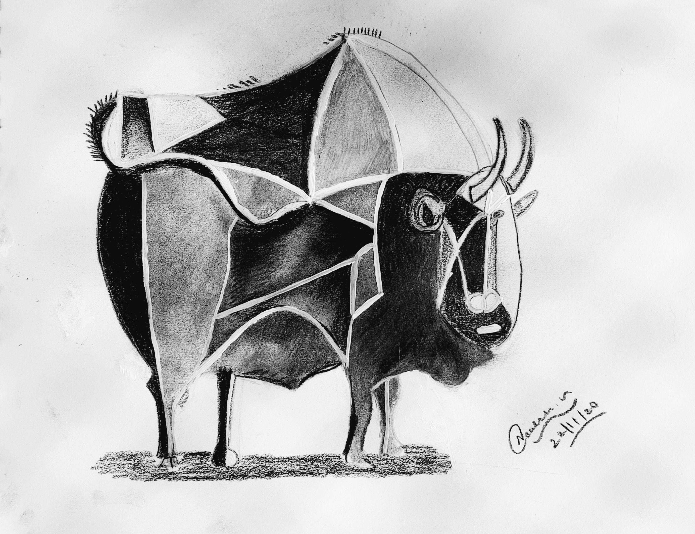
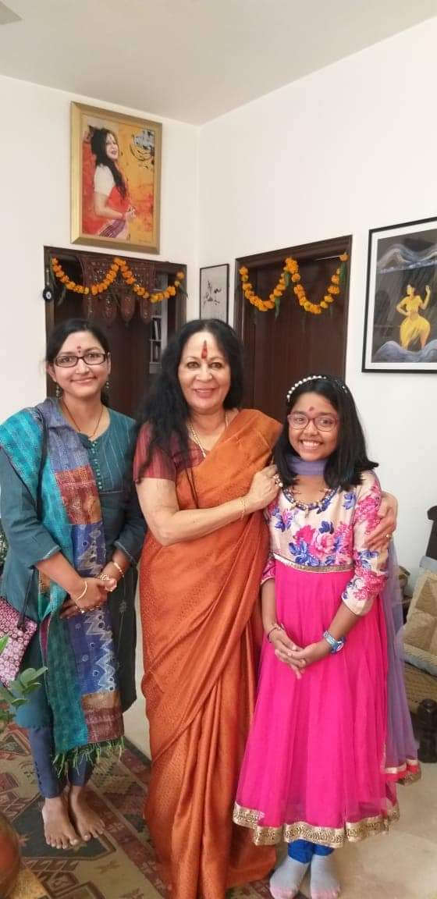

Hello everyone!I am Nouloshi.I am 11 years old studying in Tagore International school.In this website you are going to be knowing the hobbies I am fond of.
I love swimming.I started to get trained for swimming in the age of 4 while I was living in Chennai.After that when we shifted to Delhi I started continuing my training in JNU campus as a begginer.Then after sometime when my father realised that I was capable of swimming by myself he asked my teachers to move my position in the seniors pool where I can practice by myself so that is how I loved and learnt swimming!!
I love to dance.I started learning Bharatnatyam in Chennai when I was 4 years old.
I love reading like anything.Whenever I read any thing I get absorbed in a lot.I read types of books which can gain my interest in it.Sometimes by getting ideas from these books I write my own stories.Now for listening music I listen to mis which has good beats and good lyrics and music.
THANKS TO READ MY WEBSITE.I HOPE YOU GOT TO KNOW ABOUT THE HOBBIES I LOVE TO DO.